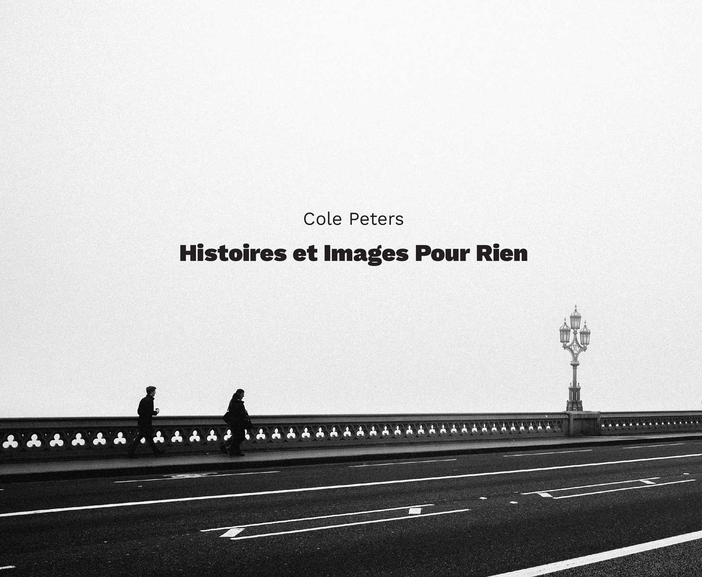

— Histoires et Images Pour Rien

Front coverOne hundred images. Presented without context. Thick with questions, devoid of answers.
‘Histoires et Images Pour Rien’ is my first book of photographs, which comprises a year’s worth of images of people and places from across the United Kingdom and parts of Europe.
At a surface level, the book is firmly rooted in the traditions of street photography. Most of the images which make up the book have been captured on city streets — the subjects unwitting, the action unplanned. Tropes familiar to the realm of candid photography — juxtapositions of subjects and of geometries, and the search for decisive moments — are employed to set the scene.
Beneath this familiar exterior, other presences and motifs await closer inspection.
Across one hundred images, presented in chronological order but without the provision of captions or narratives, ‘Histoires…’ is a collection of photographs which seeks to ask more than to answer. The title itself draws inspiration from a collection of works by Samuel Beckett — an author whose works, along with those of Polish author Bruno Schulz, have been key in shaping my interest in the creation of mysteries which remain tantalisingly unresolved.
This, my first foray into publishing my photographs in book-form, is at its core an attempt to examine and question the purpose of the photograph, while engaging the viewer’s conscious and subconscious mind in the spinning of spontaneous narratives.